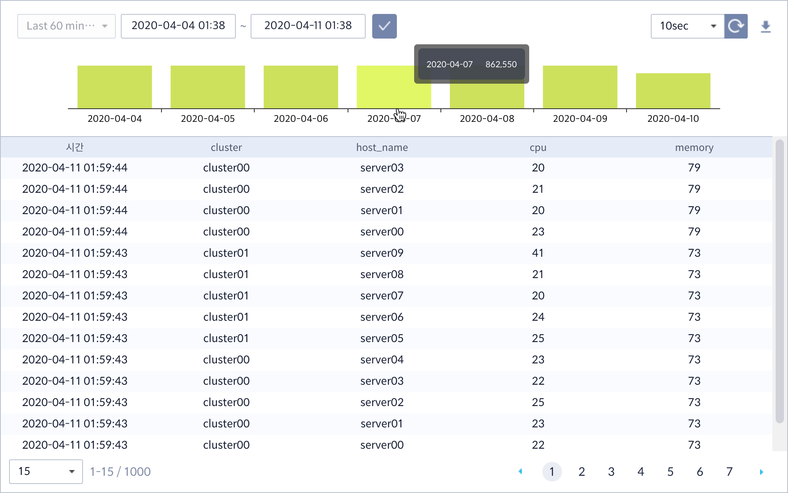

검색¶
일반적으로는 이상치를 검출하는 시스템과 데이터를 조회하는 시스템이 별도로 존재하여 이상 탐지 직후 원인을 찾기 위해 데이터를 조회하려면 또 다른 시스템에 접근해야만 합니다. Metatron Anomaly는 이상 탐지 알람을 받은 직후 동일한 시스템 내에서 사용자가 선정한 데이터 소스에 대해 다양한 조건으로 조회할 수 있는 기능을 제공합니다.
데이터 소스 선정¶
검색 화면에 초기 접근 시 가장 먼저 데이터 소스를 선택해야 합니다. 선택한 데이터 소스는 다른 데이터 소스로 변경하기 전에는 다른 화면으로 이동해도 계속 유지됩니다.

하단의 데이터소스 선택 버튼을 누르면 데이터 소스 선택 창으로 이동합니다.

데이터 소스가 선택되면 기본적으로 전체 필드에 대한 결과 값이 조회됩니다. 조회 기간은 데이터 소스 수집 시간 단위에 따라 기본값이 다르게 설정되어 있습니다.

필드 선택 및 조건 설정¶
필드 선택¶
각 필드 값 우측에는 측정값(measure)의 경우 값의 범위를, 차원값(dimension)의 경우 값의 개수를 보여줍니다. 검색을 원하는 필드를 선택하여 적용을 누르면 해당하는 필드 값에 대해서만 조회할 수 있습니다.

조건 설정¶
조건 설정 탭으로 이동하면 각 필드에 대한 검색 조건을 상세히 설정할 수 있습니다. 데이터 조회 질의문을 작성하지 못하는 시스템 운영자 및 현업 사용자들도 손쉽게 복잡한 조건을 설정하여 데이터를 조회할 수 있도록 UI를 제공하고 있습니다.
개별 필드값에 대한 조건식들은 서로 and / or 관계를 설정할 수 있으며, 상단의 그룹 추가를 통해 그룹 간에도 and / or 관계를 설정할 수 있습니다.

측정값 필드 조건식에 제공되는 비교 연산자는 다음 6가지입니다.
=(같음)
< (작음)
≤ (작거나 같음)
≥ (크거나 같음)
~ (사잇값)

측정값에 대한 조건값 입력창에 커서가 입력되면 최소값과 최대값이 툴팁으로 조회됩니다. 해당 값을 참조하여. 조건식을 입력할 수 있습니다.

차원값 필드 조건식에 제공되는 연산자는 다음 4가지입니다.
시작
포함
시작 단어
종료 단어

모든 검색 이력들은
을 눌러 해당 데이터 소스에 대한 조회할 수 있습니다. 각 검색 이력에 대해 검색 시간, 조건 등을 조회할 수 있으며 우측의 적용을 누르면 동일한 조건으로 데이터를 조회합니다.

검색 결과¶

조회 기간 설정: 검색 결과 창 상단에는 조회 대상이 되는 데이터 기간을 설정할 수 있습니다. 현재 시간 대비 상대적인 기간을 drop-down 메뉴에서 선택하거나, 특정 시간 범위를 지정하여 조회할 수 있습니다.
검색 결과 실시간 갱신: 우측의
버튼을 누르면 10초 간격으로 검색 결과를 업데이트하여 신규로 들어오는 데이터에 대해 조회를 지원합니다. 갱신 주기는 30초 또는 60초로 변경 가능하며, 다시 |icon_reset|을 누르면 갱신을 중지할 수 있습니다.
엑셀파일 다운로드:
를 누르면 현재 조회 결과를 엑셀파일(.xls)로 다운로드 합니다.
히스토그램: 막대 차트는 데이터가 저장된 시간 단위 별로 데이터 개수를 count한 히스토그램(histogram)입니다.
리스트 항목 노출 개수 변경: 한번에 조회되는 데이터 레코드 수는 최대 1000개이며, 한 화면에 보여줄 레코드 수를 하단의 drop-down 메뉴에서 15개, 30개, 또는 50개로 변경할 수 있습니다.